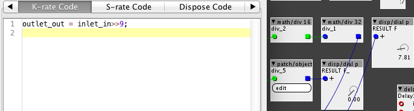

Hello 
I am trying to convert an integer value to a fractional value. When I patch the below with factory objects it works as supposed, but when I try to do it with code it doesnt really work:

The top calculation with a integer div 16 followed by a fractional div 32 gives the right value.. But when I try to code it.. Making all the calculations in one object, dividing by 512(>>9) and using and integer input and and fractional output it does not work. I just get no output at all. It should output 7.81, like the top calculation... So I thinking I need to convert it in some way. I also looked inside the conv/to f to see what is going on, but it seems like it is the inlets/outlets doing the conversion, not by code.
Any idea how to convert the integer value to fractional?
Thanks, Jaffa